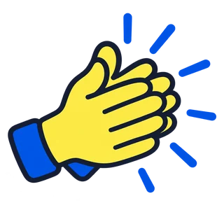

In de vorige les las je een ritmevierkant: in elk vakje stond wat je op die tel doet. Boem is met je handen op je knieën, klap is in je handen klappen.
Nu ben jij de maker. Jij bepaalt wat er in de vakjes staat, en daarna speelt de hele klas jouw ritme.
Sleep een plaatje naar een vakje. Of tik eerst op een plaatje en dan op een vakje. Een vakje mag ook leeg blijven: dan is het stil op die tel. Met de gum maak je een vakje weer leeg. Druk op afspelen: eerst tellen we vier tellen af, en dan hoor je jouw ritme twee keer. Onderaan krijg je een code van vier letters: typ die op het digibord in, en de hele klas speelt jouw ritme.
Sleep de knoppen naar de goede plek.
Jouw code
Klinkt het goed? Speel het dan samen met de klas: iedereen doet wat er in het gele vakje staat. Lukt het ook als je het tempo hoger zet?